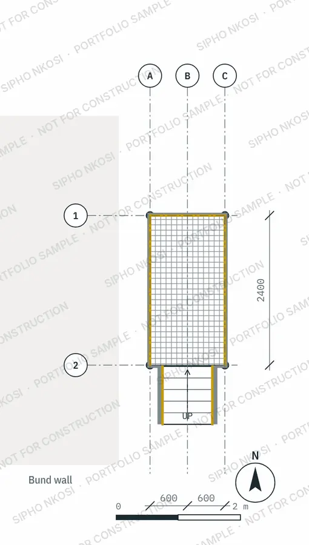
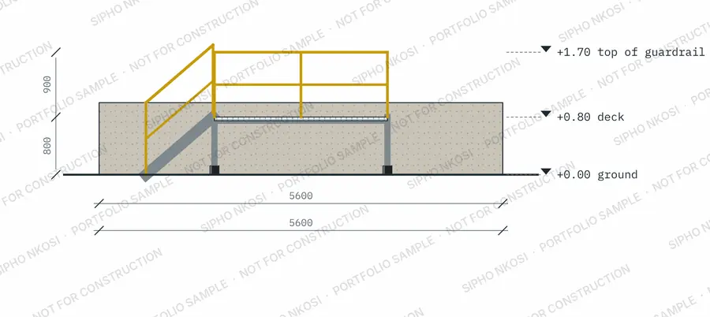
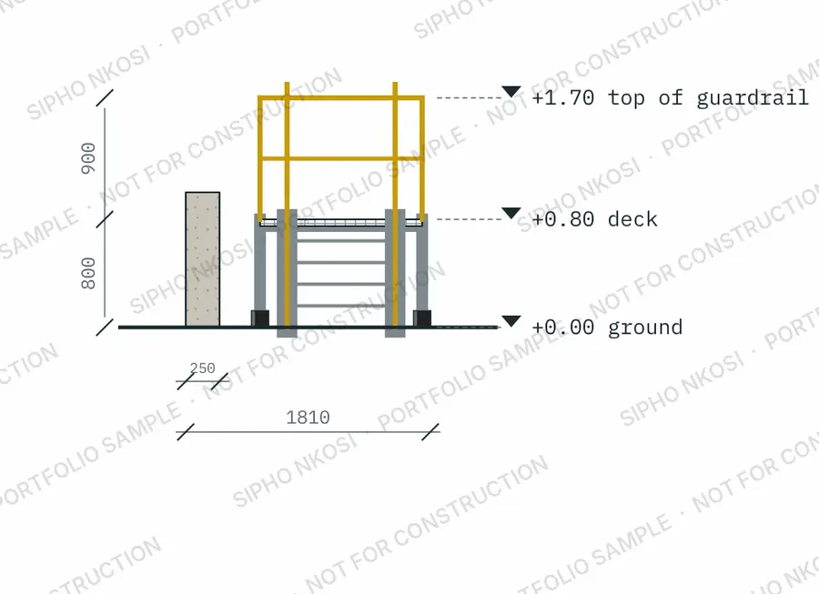
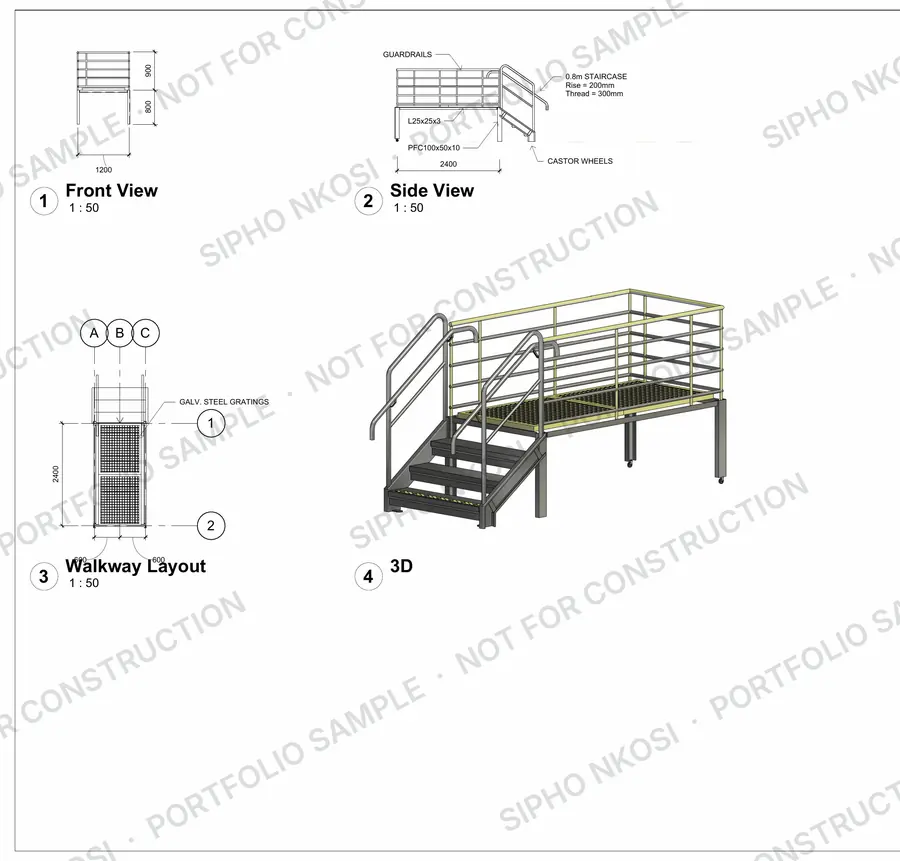

Problem statement
The existing walkway at the AN bund wall had been removed so the bund wall could be rebuilt, which left operators with no access to the tanks during the works.
Scope
What I was asked to deliver
Come up with a temporary access solution that operators could use until the walkway was reinstated.
Solution
How I solved it
- Designed a mobile platform: a 2.4 × 1.2 m galvanised grating deck at +0.8 m on castor wheels, so it can be moved around the works and taken away when the walkway goes back.
- 0.9 m guardrails on three sides and a four-riser stair, 0.8 m wide with 200 mm risers and 300 mm goings.
- PFC100 × 50 legs braced with L25 × 25 × 3 angles, to keep it light enough to push into place.
3D model
Watch it go together
Build sequence
Drag to orbit · scroll or pinch to zoom · right-drag to pan
Drawings
Plans, elevations & sections



Drawing set as issued
The original fabrication & construction sheets
